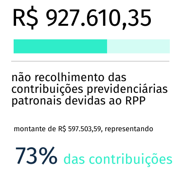

Município de Santa Filomena
Análise da Sentença
As contas do município de Santa Filomena foram rejeitadas pelo TCE no dia 29 de Janeiro de 2016. Os motivos que levaram a rejeição estão listados abaixo.
-
A existência de déficit de execução orçamentária, da ordem de R$ 927.610,35;
-
O déficit financeiro encontrado no município de Santa Filomena, no montante de R$ 335.286,30;
-
O não recolhimento das contribuições previdenciárias dos servidores;
-
O não recolhimento das contribuições previdenciárias patronais.
CONSELHEIRO(a): JOÃO CARNEIRO CAMPOS
CONSELHEIRO(a): RANILSON RAMOS
CONSELHEIRO(a):, Presidente da Sessão e relatora do processo: TERESA DUERE
Procurador do Ministério Público de Contas: GUSTAVO MASSA
Recife, 21 de Setembro de 2016
Principais Tags
@Servidores; @Execução Orçamentária; @Déficit
Charts e Gráficos
Consequências
- Consequências para o equilíbrio fiscal e a capacidade financeira do município.
- Restrição da capacidade de pagamento do município frente às suas obrigações de curto prazo.
- Aumento do passivo do município ante o seu sistema de previdência
Recomendações
recomendações a seguir relacionadas, a partir da data de publicação desta decisão, sob pena de aplicação da multa prevista no inciso XII do artigo 73 do citado Diploma legal:
- Adotar mecanismos de controle de modo que não deixe de efetuar a arrecadação de Receitas Próprias do município.
- Efetuar o registro e cobrança da Divida Ativa do município.
- Zelar pela confiabilidade das informações contábeis de modo que evidenciem a real situação patrimonial do município;